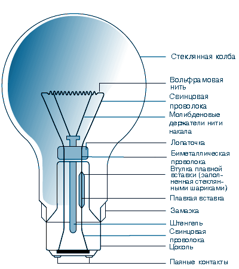
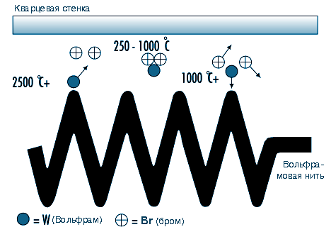
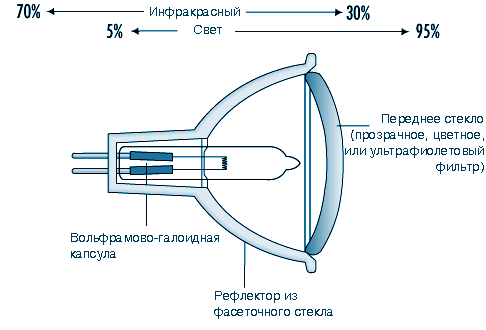
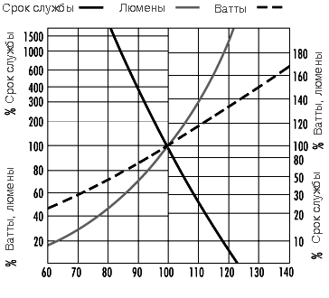
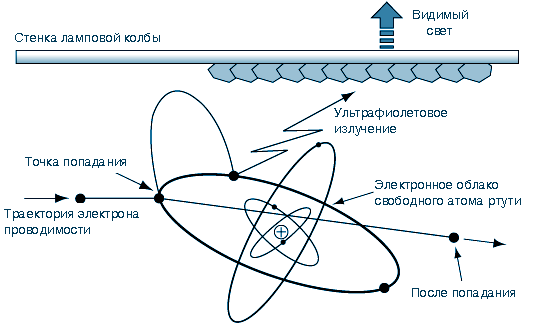
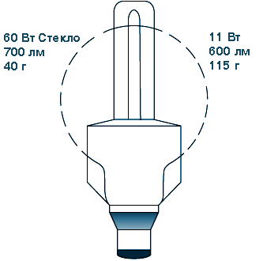
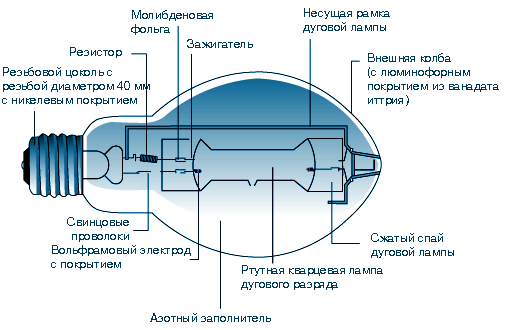
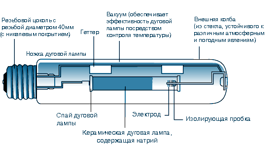

Характеристики некоторых типов ламп
 Документ из ИПС "Кодекс"
Документ из ИПС "Кодекс"
Richard Forster
Лампа является преобразователем энергии. Хотя она может выполнять и
вспомогательные функции, ее главным назначением является преобразование
электрической энергии в видимое электромагнитное излучение. Существует
много способов для получения света. Стандартным способом для получения
освещения является преобразование электрической энергии в свет.
Типы света
Накаливание
Когда твердые тела и жидкости нагреваются,
они испускают видимое излучение при температурах свыше 1000 К. Это
явление известно как накаливание. Такое нагревание является основой для
генерирования света в лампах накаливания: электрический ток проходит
через тонкую вольфрамовую проволоку, температура которой повышается
примерно до 2500-3000 К, в зависимости от типа лампы и ее применения.
Однако
для этого способа получения света существует предел, описанный в законе
Планка для абсолютно черного тела или полного излучателя, согласно
которому спектральное распределение излучаемой энергии возрастает с
повышением температуры. При температуре примерно 3600 К наблюдается
заметное усиление видимого излучения, и длина волны максимальной
мощности переходит в видимый диапазон. Эта температура близка к
температуре плавления вольфрама, из которого сделана нить накала, так
что предельная практическая температура составляет примерно 2700К, свыше
которой испарение нити становится уже чрезмерным. Одним из результатов
такого спектрального перехода является то, что большая часть
испускаемого излучения выделяется не как свет, а как тепло в
инфракрасной области. Таким образом, лампы накаливания могут являться
эффективными нагревательными приборами, используемыми для сушки
фотоотпечатков, приготовления пищи и в животноводстве.
Электрический разряд
Электрический
разряд является способом, применяемым в современных
источниках света для торговых и
промышленных
предприятий, так как он более эффективен для
производства света. Некоторые типы ламп сочетают электрический разряд с
фотолюминесценцией.
Электрический
ток, пропущенный через газ, побуждает атомы и молекулы к испусканию
излучения в спектре, характеризующем имеющиеся элементы. Обычно
используются два металла, натрий и ртуть, потому что они испускают
полезное излучение в пределах видимого спектра. Никакой из металлов не
излучает постоянного спектра, а газоразрядные лампы имеют избирательные
спектры. Их цветопередача никогда не будет идентична постоянному
спектру. Газоразрядные лампы часто классифицируются как лампы высокого
или низкого давления, хотя эти термины являются относительными, а
натриевые лампы высокого давления работают при давлении ниже одной
атмосферы.
Типы люминесценции
Фотолюминесценция
происходит, когда излучение поглощается твердым телом, а затем
испускается снова с другой длиной волны. Когда повторно испускаемое
излучение находится в пределах видимого спектра, этот процесс называется
флуоресценцией или фосфоресценцией.
Электролюминесценция имеет место, когда свет генерируется при
пропускании электрического тока через некоторые твердые тела, такие,
например, как кристаллические люминофоры. Она применяется в светящихся
знаках и в приборных досках, но не смогла пока стать практическим
источником света для освещения зданий и улицы.
Эволюция электрических ламп
Хотя
технологический прогресс и привел к производству различных
электрических ламп, основным фактором, повлиявшим на их развитие, было
воздействие со стороны рынка. Например, производство ламп накаливания,
применявшихся в начале этого столетия, стало возможным только после
появления хороших вакуумных насосов и волочения вольфрамовой проволоки.
Однако рост рынка вызвал широкомасштабные выработку и распределение
электроэнергии для удовлетворения потребности в электрическом свете.
Электрическое освещение имело множество преимуществ по сравнению с
газовыми и масляными светильниками, такие, например, как ровный свет, не
требующий частого обслуживания, а также возросшая степень безопасности
ввиду отсутствия открытого пламени и местных побочных продуктов горения.
В
период экономического подъема после Второй мировой войны основной упор
был сделан на повышение производительности труда. Люминесцентная лампа
стала преобладающим источником света, потому что сделала возможным
бестеневое и сравнительно холодное освещение заводов и учреждений,
позволяющее использовать имеющиеся площади с максимальной выгодой.
Требования по светоотдаче и мощности для типовой 1500 -миллиметровой
лампы даны в таблице 46.1 .
--------------------------------------------------------------------------------
Таблица 46.1 Улучшенная светоотдача и мощность некоторых типовых 1500-мм люминесцентных ламп
|
Номинальная мощность (W) |
Диаметр (мм) |
Газ-наполнитель |
Светоотдача (люмены) |
|
80 |
38 |
аргон |
4800 |
|
65 |
38 |
аргон |
4900 |
|
58 |
25 |
криптон |
5100 |
|
50 |
25 |
аргон |
5100 |
--------------------------------------------------------------------------------
К
70-м годам цены на нефть возросли, и затраты на энергию составили
значительную часть производственных расходов. На рынке потребовались
люминесцентные лампы, которые дают то же количество света при меньшем
потреблении электроэнергии. Дизайн лампы совершенствовался по нескольким
направлениям. На исходе века появилось растущее осознание проблем
защиты окружающей среды. Лучшее использование уменьшающихся запасов
сырья, повторное и безопасное для окружающей среды использование
продукции и постоянная забота об уменьшении потребления энергии
(особенно энергии, выработанной из ископаемого топлива) оказывают
большое влияние на дизайн современных ламп.
Критерии эффективности
Критерии эффективности зависят от конкретного применения. Вообще эти критерии не различаются по степени важности.
Светоотдача:
мощность лампы в люменах будет определять ее пригодность в
зависимости от масштабов объекта и требуемого количества освещения.
Цветовые свойства и цветопередача:
Для освещения некоторых шкал и численных величин используются лампы,
обладающие определенными цветовыми свойствами и цветопередачей. Здесь
необходимо помнить, что некоторые цифры предназначены для обеспечения
управления, а некоторые являются лишь приближениями. Поэтому каждый раз,
когда это возможно, решение о применении той или иной лампы нужно
принимать, исходя из применяемых ныне ламп, с использованием цветов или
материалов, соответствующих предназначению лампы.
Срок службы лампы:
Большинство ламп потребуется заменить несколько раз на протяжении
эксплуатации освещаемого объекта и дизайнеры должны свести до минимума
возможные неисправности и обслуживание, чтобы не причинять неудобства
находящимся там людям. Лампы используются в самых различных целях.
Средний расчетный срок службы лампы часто является компромиссом между
ее стоимостью и эксплуатационными качествами. Например, лампа для
диаскопа будет работать несколько сотен часов, так как максимальная
светоотдача очень важна для качества изображения. Для
противопоставления: некоторые лампы дорожного освещения можно менять раз
в два года, что означает примерно 8000 часов работы.
Далее, на
срок службы лампы влияют условия, в которых она работает. Таким образом,
не существует простого критерия качества, который можно было бы
использовать во всех случаях. Кроме того, срок службы лампы может
определяться исходя из различных критериев отказа. Физической
неисправности, такой как перегорание нити или повреждение корпуса лампы,
может предшествовать понижение светоотдачи или изменение ее световых
свойств. На срок службы лампы влияют внешние условия ее работы, такие
как температура, вибрация, частота включений, колебания напряжения сети,
положение, в котором она установлена и так далее.
Следует заметить, что средний срок службы лампы определяется временем,
после которого произошло 50% неисправностей из контрольной партии ламп.
Вообще-то такое определение срока службы лампы вряд ли подойдет для
многих торговых и промышленных объектов. Таким образом, практический
срок службы лампы обычно меньше опубликованных данных, которыми следует
руководствоваться лишь для сравнения.
Эффективность: Как
правило, эффективность данного типа лампы улучшается по мере возрастания
номинальной мощности, потому что большинство ламп имеет постоянную
составляющую потерь. Однако у различных типов ламп эффективность также
оказалась различной. Следует использовать лампы с наиболее высокой
эффективностью, при условии, что они соответствуют необходимым критериям
размера, цвета и срока службы. Энергосбережение не должно
осуществляться за счет зрительного комфорта или работоспособности
пользователей источника света. Некоторые типовые показатели
эффективности даны в таблице 46.2.
--------------------------------------------------------------------------------
Таблица 46.2 Типовые коэффициенты светоотдачи ламп
|
Коэффициенты светоотдачи ламп |
|
|
Лампа накаливания 100 Вт |
14 лм/Вт |
|
Люминесцентная лампа 58 Вт |
89 лм/Вт |
|
Натриевая лампа высокого давления 400 Вт |
125 лм/Вт |
|
Натриевая лампа низкого давления 131 Вт |
198 лм/Вт |
--------------------------------------------------------------------------------
Основные типы ламп
За истекшие годы национальными и международными стандартами и регистрами было разработано несколько систем номенклатуры.
В
1993 году Международная электротехническая комиссия (МЭК) опубликовала
новую Международную систему кодирования электроламп (МСКЭЛ),
предназначенную для замены существующих национальных и региональных
систем кодирования. Список некоторых кратких кодов МСКЭЛ для различных
ламп приведен в таблице 46.3 .
--------------------------------------------------------------------------------
Таблица 46.3 Краткая форма кодирования, принятая Международной системой кодирования электроламп для некоторых
типов
ламп
|
Тип (код) |
Общая номинальная мощность (Вт) |
Цветоотдача |
Цветовая температура (К) |
Срок службы (часы) |
|
Компактные люминесцентные лампы (FS) |
5-55 |
хорошая |
2700-5000 |
5000-10000 |
|
Ртутные лампы высокого давления (QE) |
80-750 |
удовлетворительная |
3300-3800 |
20000 |
|
Натриевые лампы высокого давления (S-) |
50-1000 |
от бедной до хорошей |
2000-2500 |
6000-24000 |
|
Лампы накаливания (I) |
5-500 |
хорошая |
2700 |
1000-3000 |
|
Высокочастотные газоразрядные лампы (XF) |
23-85 |
хорошая |
3000-4000 |
10000-60000 |
|
Натриевые лампы низкого давления (LS) |
26-180 |
монохроматический желтый цвет |
1800 |
16000 |
|
Низковольтные вольфрамово-галоидные лампы (HS) |
12-100 |
хорошая |
3000 |
2000-5000 |
|
Металлогалоидные лампы (M-) |
35-2000 |
от хорошей до отличной |
3000-5000 |
6000-20000 |
|
Люминесцентные лампы (FD) |
4-100 |
от удовлетворительной до хорошей |
2700-6500 |
10000-15000 |
|
Вольфрамово-галоидные лампы (HS) |
100-2000 |
хорошая |
3000 |
2000-4000 |
--------------------------------------------------------------------------------
Лампы накаливания
В
этих лампах используется вольфрамовая нить в инертном газе или вакууме,
помещенная в стеклянную колбу. Инертный газ препятствует испарению
вольфрама и уменьшает потемнение колбы. Лампы имеют самые различные
формы колбы, играющие чаще всего декоративную роль. Устройство типичной
лампы общего назначения дано на рисунке 46.1 .
--------------------------------------------------------------------------------
Рис. 46.1 Устройство стеклянной лампы

--------------------------------------------------------------------------------
Лампы
накаливания имеют также широкую цветовую и отделочную гамму. В кодах
МСКЭЛ и на некоторых типовых формах ламп дана такая информация,
показанная в таблице 46.4.
--------------------------------------------------------------------------------
Таблица 46.4 Обычные цвета и формы ламп накаливания с кодами МСКЭЛ
|
Цвет/форма |
Код |
|
Прозрачная |
/C |
|
Матированная |
/F |
|
Белая |
/W |
|
Красная |
/R |
|
Синяя |
/B |
|
Зеленая |
/G |
|
Желтая |
/Y |
|
Грушевидная (стекло) |
IA |
|
Свечеобразная |
IB |
|
Коническая |
IC |
|
Шарообразная |
IG |
|
Грибовидная |
IM |
--------------------------------------------------------------------------------
Лампы
накаливания все еще популярны в домашнем освещении из-за своей низкой
стоимости и компактного размера. Однако для освещения торговых площадей и
промышленного освещения низкая эффективность порождает очень высокие
эксплуатационные расходы, поэтому обычно используются газоразрядные
лампы. Типовая эффективность 100-ваттной лампы составляет 14 люменов на
ватт по сравнению с 96 люменами на ватт 36-ваттной люминесцентной лампы.
В лампах накаливания уменьшение силы света обеспечивается
простым уменьшением напряжения, и они все еще используется там, где
уменьшение силы света является желательным контрольным параметром.
Вольфрамовая
нить представляет собой компактный источник света, который легко
фокусируется рефлекторами и линзами. Лампы накаливания используются для
витринного освещения, где требуется управление направлением светового
потока.
Вольфрамово-галогенные лампы
Эти лампы
подобны лампам накаливания и генерируют свет таким же способом, при
помощи вольфрамовой нити. Однако в колбе находится галогенный газ (бром
или йод), контролирующий испарение вольфрама. Смотри рисунок 46.2 .
--------------------------------------------------------------------------------
Рис. 46.2 Галогенный цикл

--------------------------------------------------------------------------------
Основным моментом в галогенном цикле является поддержание минимальной температуры стенки колбы на уровне ,
что необходимо для того, чтобы галоид вольфрама оставался в
газообразном состоянии и не осаждался на стенке колбы. Эта температура
означает, что речь идет о колбах, сделанных из кварца, а не из стекла.
Кварц позволяет уменьшить размер колбы.
У большинства
вольфрамово-галогенных ламп срок службы выше, чем у аналогичных ламп
накаливания и нить работает при более высокой температуре, давая больше
света более белого цвета.
Вольфрамово-галогенные лампы стали
популярными там, где основным требованием является малый размер и
высокие эксплуатационные качества. Типичными примерами являются
освещение сцены, кино и телевидение, где обычно требуется направленный
свет и возможность управления интенсивностью света.
Низковольтные вольфрамово-галогенные лампы
Сначала
они предназначались для диаскопов и для кинопроекционных аппаратов. При
напряжении в 12 В нить той же мощности, что и при 230 В становится
меньше и толще. Это позволяет более эффективно фокусировать поток света,
а большая масса нити позволяет выдерживать более высокую рабочую
температуру, увеличивая светоотдачу. Толстая нить является более
прочной. Было решено, что эти преимущества станут полезными для
освещения торговых витрин и, несмотря на то, что в этом случае нужно
иметь понижающий трансформатор, эти лампы сейчас доминируют при
освещении витрин. Смотри рисунок 46.3 .
--------------------------------------------------------------------------------
Рис. 46.3 Светонаправляющая дихроичная низковольтная лампа

--------------------------------------------------------------------------------
Хотя
пользователи кинопроекционных аппаратов и хотят, чтобы света было как
можно больше, слишком высокая температура вредна для прозрачной среды.
Был разработан специальный тип рефлектора, который отражает только
видимое излучение, позволяя инфракрасному излучению (теплу) уходить
через заднюю часть лампы. Это свойство сейчас используется во многих
низковольтных рефлекторных лампах, применяемых для освещения витрин и в
проекционном оборудовании.
Чувствительность по напряжению:
все лампы накаливания чувствительны к изменениям напряжения, которые
отрицательно влияют на их светоотдачу и срок службы. Была предпринята
попытка согласовать напряжение питания по всей Европе на уровне 230 В
путем расширения пределов, в которых могут работать поставщики
электроэнергии. Это расширение составляет ±10%, что дает диапазон
напряжений от 207 до 253 В. Лампы накаливания и вольфрамово-галогенные
не могут работать надежно в этом диапазоне, поэтому потребуется привести
существующее напряжение питания в соответствие с характеристиками
лампы. Смотри рисунок 46.4 .
--------------------------------------------------------------------------------
Рис. 46.4 Стеклянные лампы накаливания и напряжение питания

--------------------------------------------------------------------------------
Газоразрядные
лампы также пострадают от такого широкого предела изменения напряжения,
поэтому установка внешнего устройства управления на нужную величину
приобретает важное значение.
Люминесцентные лампы
Это
ртутные лампы низкого давления, поставляемые в вариантах с термокатодом
и с холодным катодом. Прежние лампы - это обычные люминесцентные лампы
для офисов и заводов; термокатод предназначен для запуска лампы
посредством предварительного нагрева электродов до достаточной ионизации
газа и ртутных паров для получения разряда.
Лампы с холодным катодом в основном используются в указателях и для рекламы. Смотри рисунок 46.5 .
--------------------------------------------------------------------------------
Рис. 46.5 Принцип люминесцентной лампы

--------------------------------------------------------------------------------
Люминесцентные
лампы требуют наличия внешнего устройства управления для запуска и
контроля лампового тока. В дополнение к небольшому количеству ртутного
пара в них используется пусковой газ (аргон или криптон).
Низкое
давление ртути генерирует разряд бледно-голубого света. Большая часть
излучения находится в ультрафиолетовом диапазоне с длиной волны 254
миллимикрона, что является частотой излучения, свойственной ртути.
Внутренняя поверхность стенки лампы имеет тонкое люминофорное покрытие,
которое поглощает ультрафиолетовое излучение и излучает энергию в виде
видимого света. Цветовая характеристика света определяется люминофорным
покрытием. Изменение цвета и цветоотдачи достигается благодаря
использованию широкой гаммы люминофоров.
В пятидесятых годах
благодаря применению имеющихся люминофоров можно было сделать выбор
между удовлетворительной эффективностью (60 люменов на ватт) с
недостатком красных и голубых цветов и улучшенной цветоотдачей от
высококлассных люминофоров при низкой эффективности (40 люменов на
ватт).
К 70-м годам были разработаны новые, узкополосные
люминофоры. Отдельно излучался красный, голубой и зеленый свет, и при их
смешении был получен белый свет. Варьирование пропорций того или иного
света позволило получить целую гамму различных цветов, причем все они
имели отличную одинаковую цветоотдачу. Эти три-люминофоры более
эффективны, чем ранние типы люминофоров и являются самым лучшим решением
экономичного освещения, даже с учетом того, что такие лампы стоят
дороже. Улучшенная эффективность снижает эксплуатационные затраты и
расходы по установке.
Принцип три-люминофора был расширен
мультилюминофорными лампами, где необходима критическая цветоотдача,
например такая, которая требуется для художественных галерей и сравнения
красок в промышленности.
Современные узкополосные люминофоры служат дольше, имеют лучшие световые свойства и увеличивают срок службы лампы.
Компактные люминесцентные лампы
Люминесцентная
лампа не является практичной заменой лампы накаливания из-за своей
линейной формы. Маленькие трубки с небольшим внутренним диаметром могут
быть доведены почти до такого же размера, что и лампы накаливания, но
это приведет к гораздо большей электрической нагрузке на люминофорный
материал. Применение три-люминофоров является существенным для
достижения приемлемого срока службы ламп. Смотри рисунок 46.6.
--------------------------------------------------------------------------------
Рис. 46.6 Компактная люминесцентная лампа на четырех ножках

--------------------------------------------------------------------------------
Три-люминофоры
применяются во всех компактных люминесцентных лампах, поэтому когда эти
лампы используются совместно с линейными люминесцентными лампами, то
последние также должны быть три-люминофорными для обеспечения цветовой
однородности.
В некоторых компактных лампах применяется механизм
управления для формирования приспособлений по модернизации ламп
накаливания. Их гамма возрастает и делает возможным модернизацию
существующего осветительного оборудования для получения более
эффективного освещения. Вместе с тем, эти комплексные установки уже не
подходят для уменьшения светового потока там, где это было ранее
возможно с использованием имеющихся механизмов управления.
Высокочастотный электронный механизм управления.
Если нормальную частоту тока в 50 или 60 Гц увеличить до 30 КГц, то это
позволит увеличить эффективность люминесцентных ламп на 10 %.
Электронные схемы позволяют эксплуатировать отдельные лампы на таких
частотах. Электронная схема предназначена для обеспечения такой же
светоотдачи, как и проволочный механизм управления, от пониженной
ламповой мощности. Это позволяет обеспечить совместимость светового
модуля с тем преимуществом, при котором пониженная ламповая нагрузка
значительно увеличит срок службы лампы. Электронный механизм управления
способен работать с целой гаммой напряжений питания.
Общего
стандарта для электронного устройства управления не существует, и
эксплуатационные качества лампы могут отличаться от информации,
опубликованной ее изготовителем.
Применение электронного
устройства управления снимает нормальную проблему мерцания, к которой у
некоторых людей может быть повышенная чувствительность.
Высокочастотные газоразрядные лампы
Недавно
на рынке появились лампы, использующие принцип индукции. Это ртутные
лампы низкого давления с три-люминофорным покрытием, которые генерируют
свет так же, как и люминесцентные лампы. Энергия подается на лампу в
виде высокочастотного излучения частотой примерно 2,5 МГц от антенны,
расположенной в центре лампы. Между колбой лампы и катушкой нет
физической связи. Конструкция разрядного резервуара, не имеющего
электродов или прочих проволочных соединений, является более простой и
более прочной. Срок службы лампы определяется в основном надежностью
электронных компонентов и световыми свойствами люминофорного покрытия.
Ртутные лампы высокого давления
Разряды
высокого давления более компактны и имеют более высокие электрические
нагрузки; поэтому, чтобы выдержать давление и температуру, для них
требуются кварцевые дуговые трубки. Дуговая трубка заключена во внешнюю
стеклянную колбу с азотной или аргоно-азотной атмосферой для понижения
окисления и искрения. Колба эффективно фильтрует ультрафиолетовое
излучение от дуговой трубки. Смотри рисунок 46.7.
-------------------------------------------------------------------------------
Рис. 46.7 Устройство ртутной лампы

-------------------------------------------------------------------------------
При
высоком давлении ртутный разряд представляет собой в основном голубое и
зеленое излучение. Для улучшения цвета люминофорное покрытие внешней
колбы добавляет красный свет. Имеются варианты высокого класса с
увеличенным содержанием красного света, которые обеспечивают более
высокую светоотдачу и улучшенную цветоотдачу.
Все газоразрядные
лампы высокого давления требуют некоторого времени для выхода на полную
светоотдачу. Начальный разряд происходит через проводящий газовый
заполнитель, и металл испаряется по мере возрастания температуры лампы.
При
стабильном давлении без специального устройства управления лампа сразу
же снова не запустится. Проходит некоторое время, в течение которого
лампа остывает до нужной температуры и давление уменьшается, чтобы
нормальное напряжение питания или поджигающая схема соответствовали для
повторного возникновения дуги.
Газоразрядные
лампы имеют отрицательную характеристику сопротивления, так что для
управления током необходимо наличие внешнего устройства управления.
Наличие компонентов устройства управления вызывает некоторые потери,
поэтому пользователь должен учитывать общую мощность при рассмотрении
эксплуатационных расходов и расходов на электрическую установку. Для
ртутных ламп высокого давления существует исключение. Есть один тип
лампы, имеющий вольфрамовую нить, которая действует и как устройство для
ограничения тока и добавляет теплые цвета к голубому и зеленому
разряду. Это позволяет осуществить прямую замену ламп накаливания.
Хотя
ртутные лампы имеют длительный срок службы, около 20000 часов, их
светоотдача падает до 55% от начальной светоотдачи в конце этого
периода, поэтому их экономичный срок службы может быть короче.
Металлогалоидные лампы
Цвет
и светоотдача ртутных ламп могут быть улучшены добавлением различных
металлов к ртутной дуге. Для каждой лампы добавляемая порция очень мала и
для точного применения будет удобнее работать с металлом в
порошкообразном состоянии, в таком же, в каком находятся галоиды. Он
растворяется по мере того, как лампа нагревается и выпускает металл.
Металлогалоидная
лампа может использовать различные металлы, каждый из которых дает
специфический характерный цвет. Этими металлами являются:
· диспрозий - широкий голубовато-зеленый луч
· индий - узкий голубой луч
· литий - узкий красный луч
· скандий - широкий голубовато-зеленый луч
· натрий - узкий желтый луч
· таллий - узкий зеленый луч
· олово - широкий оранжево-красный луч
Стандартной
смеси металлов не существует, поэтому металлогалоидные лампы различных
производителей могут не совпадать по внешнему виду или по
эксплуатационным характеристикам. Лампы с невысокой мощностью, от 35 до
100 ватт, более совместимы по физическим и электрическим свойствам с
общим стандартом.
Металлогалоидные
лампы требуют наличия управляющего устройства, но недостаток
совместимости означает, что каждую комбинацию лампы и устройства нужно
подбирать отдельно, для того, чтобы обеспечить правильный запуск и
соответствующие условия эксплуатации.
Натриевые лампы низкого давления
Дуговая
лампа похожа по размеру на люминесцентную, но сделана из накладного
стекла с внутренним защитным покрытием из натрия. Дуговая лампа имеет
форму узкой буквы U b и помещена во внешнюю вакуумную оболочку для
обеспечения термостойкости. Во время запуска лампы имеют сильное красное
свечение от неонового газового заполнителя.
Характерное
излучение от паров натрия под низким давлением имеет монохроматический
желтый цвет. Оно близко к пиковой чувствительности человеческого глаза,
поэтому натриевые лампы низкого давления являются наиболее эффективными
из всех имеющихся ламп при почти 200 люменах на ватт. Тем не менее,
применение этих ламп ограничено, и они устанавливаются там, где
цветоразличение не имеет зрительной важности, а именно на магистральных
дорогах, в подземных переходах и в жилых кварталах.
Во
многих случаях эти лампы заменяются натриевыми лампами высокого
давления. Их меньший размер обеспечивает лучший оптический контроль,
особенно для дорожного освещения, где сильные отблески отражаемого небом
света являются причиной растущей обеспокоенности водителей.
Натриевые лампы высокого давления
Эти
лампы похожи на ртутные лампы высокого давления, но имеют лучшую
эффективность (свыше 100 люменов на ватт) и отличное постоянство
светового потока. Химическая активность натрия требует, чтобы дуговая
лампа была изготовлена из прозрачного поликристаллического оксида
алюминия (глинозема), так как стекло или кварц для этого не подходят.
При натриевом разряде нет ультрафиолетового излучения, поэтому
люминофорные покрытия не представляют здесь никакой ценности. Некоторые
колбы матированы или имеют покрытие для рассеивания света. Смотри
рисунок 46.8 .
--------------------------------------------------------------------------------
Рис. 46.8 Устройство натриевой лампы высокого давления

--------------------------------------------------------------------------------
По
мере того как давление натрия возрастает, излучение приобретает форму
широкой полосы вокруг желтого пика, имеющей золотисто-белый цвет. Однако
по мере того как возрастает давление, падает эффективность. В настоящее
время широко используются три отдельных типа натриевых ламп высокого
давления, показанных в таблице 46.5 .
--------------------------------------------------------------------------------
Таблица 46.5 Типы натриевых ламп высокого давления
|
Тип лампы (код) |
Цвет (К) |
Коэффициент светоотдачи (лм/Вт) |
Срок службы (часы) |
|
Стандартная |
2000 |
110 |
24000 |
|
Класса "люкс" |
2200 |
80 |
14000 |
|
Белая (SON) |
2500 |
50 |
|
--------------------------------------------------------------------------------
Стандартные
лампы применяются, как правило, для внешнего освещения, а лампы
высокого класса для внутреннего освещения промышленных объектов и лампы
White SON для освещения витрин и торговых площадей.
Уменьшение интенсивности света газоразрядных ламп
Нельзя
удовлетворительно уменьшить интенсивность света ламп высокого давления,
так как изменение мощности ламп изменяет давление и, таким образом,
основные характеристики лампы.
Интенсивность света люминесцентных
ламп может быть уменьшена при помощи высокочастотной энергии,
генерируемой электронным устройством управления. Цвет остается
постоянным. Кроме того, светоотдача приблизительно пропорциональна
мощности лампы с соответствующим сохранением электрической мощности при
снижении светоотдачи. Интегрируя светоотдачу от лампы с преобладающим
уровнем естественного дневного света, внутри помещения можно обеспечить
почти постоянный уровень освещенности.